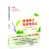

-


-
偷影子的人
作 者：[法] 马克・李维（Marc Levy）著，段韵灵 译
出版社：湖南文艺出版社
当当价：￥ 17.90
不知道姓氏的克蕾儿。这就是你在我生命里的角色，我童年时的小女孩，今日蜕变成了女人，一段青梅竹马的回忆，一个时间之神没有应允的愿望。 一个老是受班上同学欺负的瘦弱小男孩，因为拥有一种特殊能力而强大：他能“偷别人的影子”，因而能看见他...


-
看见(央视知名记者、主持人柴静：十年个人成长的告白，中国社会变迁的备忘
作 者：柴静 著
出版社：广西师范大学出版社
￥ 29.40 7.4折
- 

-
改变孩子先改变自己
作 者：贾容韬 贾毅 著
出版社：作家出版社
￥ 22.20 7.4折